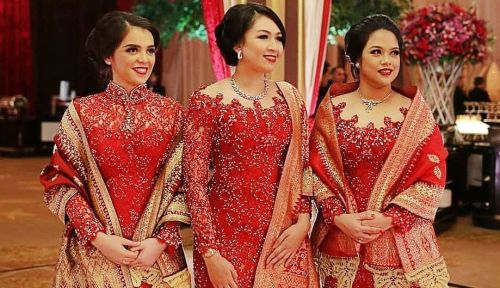
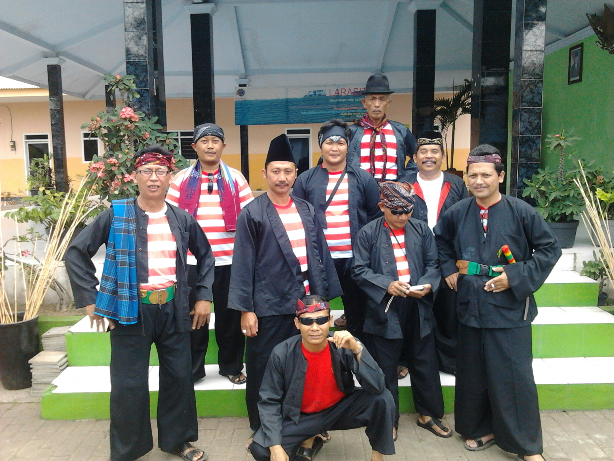
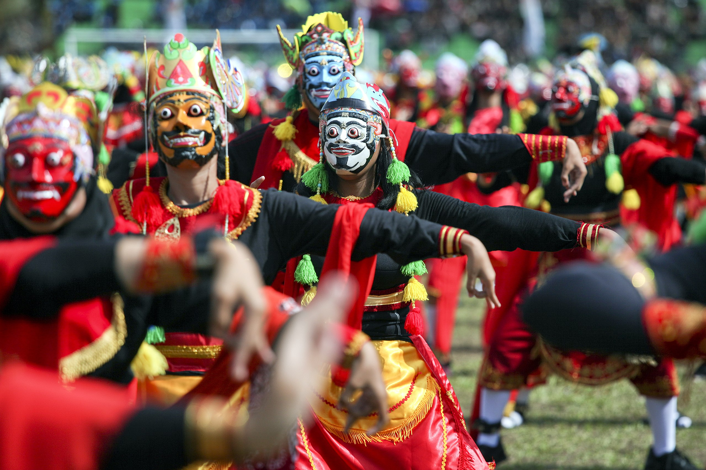
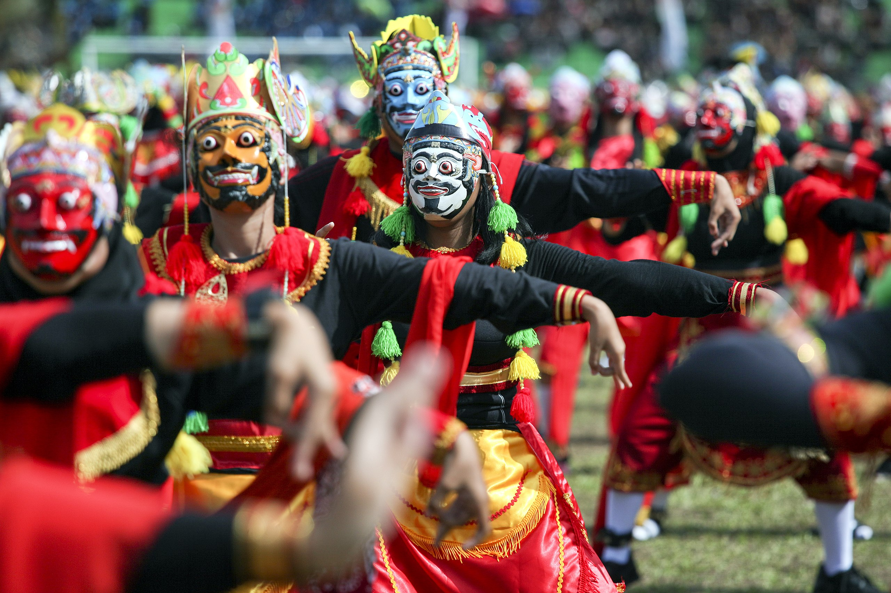

Local Language
Java
▶
Madura
▶
Osing
▶
Tengger
▶
Kangean
▶
Java
Madura
Osing
Tengger
Kangean

Joglo is a traditional Javanese house in East Java, characterized by its high pyramid-shaped roof and an open central space called the pendopo. The distinctive architectural features include the tall supporting pillars known as "soko guru" and the use of natural materials such as sirap, serat, or ijuk for the majestic roof. Joglo serves as a residence for esteemed families and is utilized for important cultural ceremonies, weddings, and gatherings. The house is surrounded by a garden, contributing to its aesthetic and cultural significance.


 


| No | Kegiatan | Jadwal | Lokasi |
|---|---|---|---|
| 1. | East Java Fashion Harmony | Juny 2024 | Tulungagung, East Java |
| 2. | Eksotika Bromo | 27-28 July 2024 | Probolinggo, East Java |
| 3. | Festival National Reyog Ponorogo | July 2024 | Ponorogo Town Square, East Java |